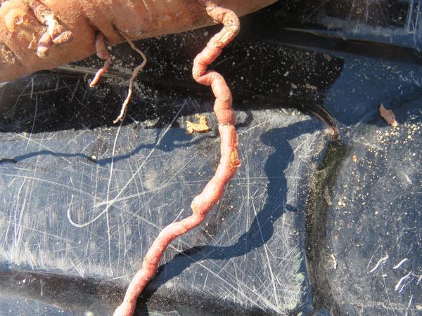
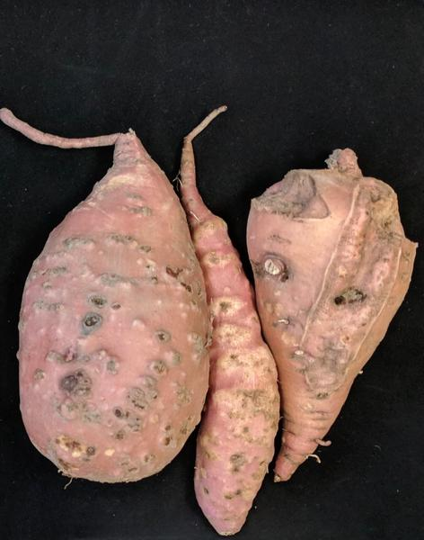
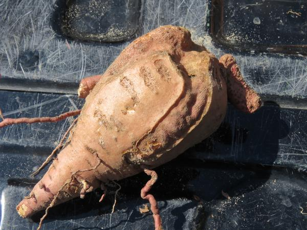
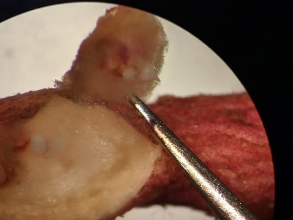

Pathogen
Root knot in sweetpotato is caused by nematodes of the genus Meloidogyne including but not limited to Meloidogyne incognita (southern root knot nematode), Meloidogyne enterolobii (guava root knot nematode, synonym Meloidogyne mayaguensis), Meloidogyne javanica (javanese root knot nematode), Meloidogyne hapla (northern root knot nematode), and Meloidogyne arenaria (peanut root knot nematode). Of these root knot nematodes, M. incognita and M. enterolobii are the main species causing serious damage to sweetpotato. M. incognita is commonly found in all sweetpotato growing regions; however, M. enterolobii is an invasive species to the United States officially reported only in Puerto Rico (1988, eggplant), Florida (2012, Jamaican poinsettia), and North Carolina (2013, soybean and cotton). However, there are recent reports from Louisiana and South Carolina on sweetpotato. Other countries where M. enterolobii has been found include China, Mexico, Brazil, Kenya, Switzerland, Vietnam, and Nigeria.
Host Crops and Plants
Root knot nematodes typically have a very broad host range, which limits the efficacy of crop rotation as a management tool. Some crops have become non-hosts of M. incognita due to resistance genes that have been introduced via breeding. However, the more aggressive species M. enterolobii, has been able to overcome some of the resistance genes previously effective for M. incognita. Thus, integrated management of M. enterolobii that combines cultural practices and crop protection is required to reduce losses.
Crops reported in several countries to become infected by M. enterolobii include:
- Vegetables and herbs: sweetpotato, cucumber, watermelon, squash, pumpkin, cantaloupe, luffa, pepper, tomato, eggplant, Irish potato, broccoli, lettuce, okra, carrot, celery, basil, parsley, common bean, sugar beet, ginger, arrowroot, white yam, salvia.
- Field crops: tobacco, soybean, cotton, cowpea, sugar cane.
- Fruits and trees: grape, plum, peach, almond, fig, guava, banana, mulberry, jujube, jackfruit, dragon fruit, coffee, papaya, pacara earpod tree.
- Ornamentals: Jamaican poinsettia, butterfly bush, crape myrtle, Hawaiian lily, snapdragon, brugmansia, caladium, bottlebrush, gardenia, lantana, willow.
- Weeds: pigweed, nutsedge, morning glory, Jerusalem cherry, nightshade, velvetleaf, wild mustard, portulaca.
A more extensive list of hosts is available through Host Range of a Genus and Species of Plant-Feeding Nematodes.
Hosts such as peanuts and maize seem to be less susceptible to M. enterolobii and can be considered for crop rotation.
Identification
Root knot nematodes can cause above ground symptoms in the form of stunting, chlorosis, and plant death, but root symptoms are the most significant, manifesting as galls in the fibrous (Figure 1) and storage roots (Figure 2) of sweetpotato. Cracking of the storage roots can also be present occasionally (Figure 3). The galls are round to oval-shaped swellings in the root tissue and can be subtle to significant in size. The level of galling depends on the susceptibility of the host, the density of nematodes, and the agressiveness of the particular nematode causing root knot. M. enterolobii tends to result in more galling than M. incognita in sweetpotato storage roots, and it also tends to occur at higher densities in infested soils. Egg masses are typically visible on the galls, starting white in color and turning dark brown as they mature. Mature female nematodes can be observed under the egg masses with a microscope (Figure 4).
Diagnosis of root knot nematode can be done visually through inspection of galls; however, species determination can only be made through molecular techniques in a diagnostics laboratory.
Management strategies are different between M. incognita and M. enterolobii; thus, it is critical that growers understand which species they have in their fields or crops before implementing a management plan to reduce yield and quality losses. Nematode species cannot be differentiated visually and the approach to identify the nematodes should include: 1) taking soil samples prior to planting to establish nematode levels and determine if fumigation and/or nematicide applications will be required in the field; 2) requesting testing for M. enterolobii in soil samples by the North Carolina Department of Agriculture & Consumer Services Nematode Lab; and 3) taking plant tissue samples if root knot nematode symptoms are observed during, or at the end of the growing season, to determine which nematode species is present. While establishing the nematode species present in your field may not result in a immediate benefit for you to take action in the present growing season, it will be invaluable information for you to manage an infested field the following growing season. Soil and tissue samples can be sent to the NCDA&CS Nematode Lab and sampling instructions can be found in their website, as well as guidelines for report interpretation. Soil samples will only provide information regarding the number of nematodes in the soil and can provide information regarding the presence of M. enterolobii if this service is specifically requested in the soil samples submission form. Tissue samples will also be able to provide information regarding the presence of M. enterolobii if the submitter requests the analysis from the NCDA&CS Nematode Lab.
Because M. enterolobii is under quarantine in North Carolina and Louisiana, it is important that growers become familiar with the requirements of the quarantines. See Management of the Guava Root Knot Nematode in Sweetpotatoes.

Figure 1. Galls on fibrous roots of sweetpotato caused by the root knot nematode Meloidogyne enterolobii
Hunter Collins and Dr. Lina Quesada, NC State Vegetable Pathology Lab

Figure 2. Galls on storage roots of sweetpotato caused by the root knot nematode Meloidogyne enterolobii
Camilo Parada and Dr. Lina Quesada, NC State Vegetable Pathology Lab

Figure 3. Cracking of storage roots of sweetpotato caused by the root knot nematode Meloidogyne enterolobii
Hunter Collins and Dr. Lina Quesada, NC State Vegetable Pathology Lab

Figure 4. Mature female inside galls on fibrous root of sweetpotato infected by the root knot nematode Meloidogyne enterolobii
Camilo Parada and Dr. Lina Quesada, NC State Vegetable Pathology Lab
Favorable Environmental Conditions for the Disease
Meloidogyne species tend to be most active at temperatures higher than 64F and their reproductive capability increases with warmer temperatures. Nematodes are best adapted to the coarse-textured sandy loam soils frequently used for sweetpotato production. Root knot damage also tends to be higher under moderate drought conditions.
It is not unusual to encounter more than one Meloidogyne species in a field, with M. incognita and M. javanica being the most commonly found in sweetpotato fields. Nematode damage can also increase susceptibility to certain fungal diseases in sweetpotato such as Fusarium, as well as promote secondary infections resulting in rot.
Because of the wide host range of root knot nematodes, weeds can also serve as hosts and provide a reservoir for the nematodes to survive winter. Weeds and volunteers should be destroyed to prevent nematode survival in those hosts.
Disease Transmission
Meloidogyne species are soilborne plant pathogens and can be transmitted via infected tissue (storage roots, seed rots, pulled slips with roots, cut slips with fibrous roots) or infested soil that can be moved via planting material or equipment. The nematodes can also be moved via irrigation water and flooding events that carry infested soil.
General Disease Management
Site selection and planting material: Nematode levels in the soil should be determined prior to planting to establish if fumigation or nematicide applications are needed (take at least 20 cores, 4 to 8 inches deep for a 5 acre field in a zig zag pattern on late summer or early fall). Planting in pathogen-free fields and using certified seed will prevent introduction of root knot nematodes into seed and production fields. Irrigation water should come from non-infested sites that will not introduce infested soil into production fields. Seed roots should only be planted in sites with no nematode issues.
Limit movement: Slips should always be cut above the soil line in a way that no roots or soil are attached to the slip since roots and soil can contain nematodes. Equipment used in infested fields should be thoroughly sanitized after use. Workers visiting infested fields should wear shoe covers and/or sanitize shoes and clothing after working in the field.
Host resistance: When possible, plant varieties that are less susceptible to root knot nematode. Covington has tolerance to M. incognita but is highly susceptible to M. enterolobii.
Reduce nematode levels in the soil: Conventional growers should use fumigants and nematicides at high rates if nematode soil levels warrant an application or if M. enterolobii is detected in soil samples. Weed and volunteer plant control will eliminate reservoirs for nematodes to survive the winter. Crop rotation to peanuts or maize will also reduce M. incognita and M. enterolobii levels in the soil.
Disease Control for Conventional Growers
The following are products labeled for control of root knot nematode in sweetpotato.
| Active Ingredient | Example Product* | Product type | Efficacy against M. incognita | Efficacy against M. enterolobii |
|---|---|---|---|---|
| 1,3-dichloropropene | Telone II | Fumigant | Excellent | Good |
| chloropicrin | Chloropicrin | Fumigant | Fair | Poor |
| fluopyram | Velum Prime | Non-fumigant nematicide | Good | Fair |
| oxamyl | Vydate | Non-fumigant nematicide | Good | Poor |
| fluensulfone | Nimitz | Non-fumigant nematicide | Good | Poor |
*Many products are available for a given active ingredient, and efficacy may vary by formulation.
Useful Resources
- The NCDA&CS Nematode Lab provides soil detection and diagnostics
- The NC State Plant Disease and Insect Clinic provides diagnostics and control recommendations
- The NC State Extension Plant Pathology portal provides information on crop disease management
- The Southeastern US Vegetable Crop Handbook provides information on vegetable disease management
- APS resource for Root Knot Nematode has more detailed information about root knot nematodes
Acknowledgements
This factsheet was prepared by the NC State Vegetable Pathology Lab in 2017.
Publication date: May 24, 2018
Reviewed/Revised: Jan. 9, 2023
Recommendations for the use of agricultural chemicals are included in this publication as a convenience to the reader. The use of brand names and any mention or listing of commercial products or services in this publication does not imply endorsement by NC State University or N.C. A&T State University nor discrimination against similar products or services not mentioned. Individuals who use agricultural chemicals are responsible for ensuring that the intended use complies with current regulations and conforms to the product label. Be sure to obtain current information about usage regulations and examine a current product label before applying any chemical. For assistance, contact your local N.C. Cooperative Extension county center.
N.C. Cooperative Extension prohibits discrimination and harassment regardless of age, color, disability, family and marital status, gender identity, national origin, political beliefs, race, religion, sex (including pregnancy), sexual orientation and veteran status.
![QR code linking to this publication page]()